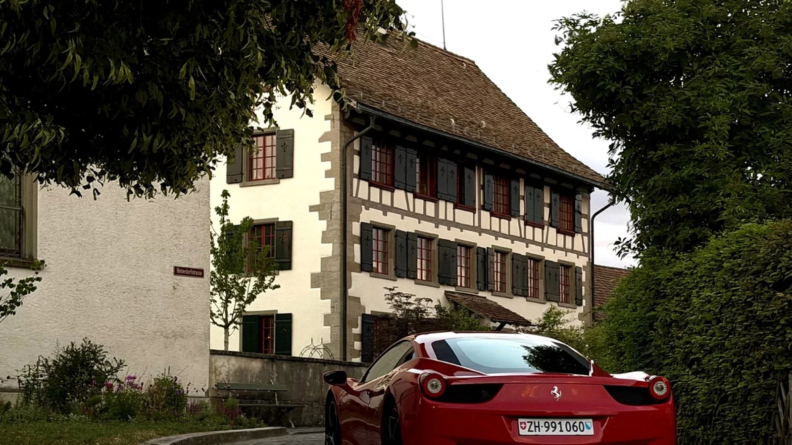
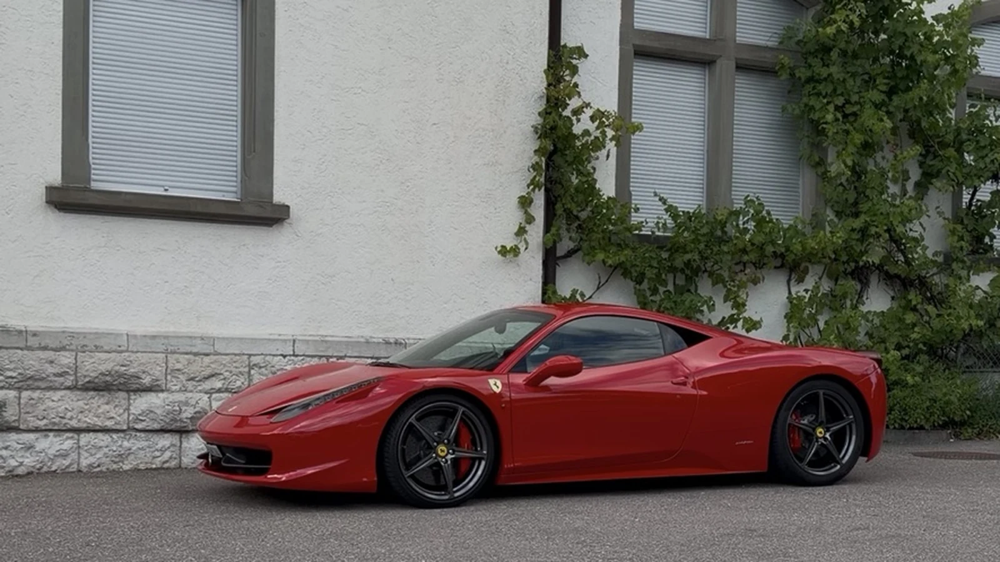

Zu seinem Geburtstag wollte sie ihm etwas schenken, von dem er seit Jahren gesprochen hatte: einmal einen frei saugenden Ferrari selbst zu fahren. Sein Wunsch war nicht auf ein einziges Modell beschränkt. Ein Mittelmotor-Ferrari stand weit oben auf der Liste, ebenso zweisitzige V12-Grand-Tourer wie der F12berlinetta oder der 812 Superfast. Der Ferrari 458 Italia passte deshalb besonders gut: Mittelmotor, Saugmotor und konsequent um den Fahrer entwickelt.
Sie reservierte unseren Kurztrip Unlimited, ein dreistündiges Paket für eine konzentrierte Abendfahrt ab Nänikon. Im Telefongespräch bat sie um Routenvorschläge. Schliesslich entschieden sie sich für Schloss Kyburg — nah genug für eine entspannte Fahrt, aber besonders genug, damit sich der Abend wie ein echtes Ereignis anfühlte.
Eine Geburtstagsüberraschung rund um die erste Ferrari-Fahrt
Drei Stunden boten genügend Zeit für eine sorgfältige Einführung, eine kurze Eingewöhnungsfahrt, eine Pause beim Schloss Kyburg und eine landschaftliche Rückfahrt durchs Zürcher Oberland.

17:00. Eine persönliche Einführung, bevor die Überraschung real wird
Das Paar traf um 17:00 Uhr in Nänikon ein. Weil es seine erste Erfahrung am Steuer eines Supercars war, nahmen wir uns bewusst Zeit für die Übergabe. Wir stellten den Ferrari 458 Italia vor, erklärten die wichtigsten technischen Daten und gingen die Bedienelemente durch, die vor der Abfahrt relevant sind.
Dazu gehören Getriebe und Rückwärtsgang, Lenkradfunktionen, Manettino, Blinker, Scheibenwischer sowie die richtigen Abläufe beim Anhalten und Parkieren. Es handelt sich schliesslich um ein italienisches Performance-Auto, und einige Lösungen sind auf sympathische Weise eigenwillig. Wer sie vorher kennt, startet ruhiger und kann sich in den ersten Kilometern auf das Fahrerlebnis statt auf die Suche nach einem Schalter konzentrieren.
Warum der Ferrari 458 genau zu seinem Geburtstagswunsch passte
Der 458 ist eine der klarsten Antworten auf den Wunsch, einen frei saugenden Ferrari zu fahren. Sein 4,5-Liter-V8 leistet 570 PS, sitzt hinter den Insassen und dreht bis 9.000 U/min. Keine Turbolader unterbrechen die unmittelbare Verbindung zwischen Gaspedal und Motor. Die Reaktion ist direkt, der Klang baut sich progressiv auf und der Charakter des Autos ist auch bei normalen Strassengeschwindigkeiten spürbar.
Nach der Einführung absolvierten wir gemeinsam eine kurze Probefahrt. Dabei ging es nicht darum, Leistung vorzuführen, sondern Sicht, Lenkung, Bremsen, Getriebe und Abmessungen vertraut zu machen. Um 17:25 Uhr war das Paar bereit, die eigene Route mit einem guten Gefühl zu beginnen.

Der Wert lag nicht einfach in drei Stunden mit einem Ferrari. Entscheidend war der Moment, in dem ein lang gehegter Wunsch real wurde — gemeinsam als Paar, auf schönen Strassen in der Nähe und mit genügend Zeit, das Auto wirklich zu erleben.
Eine landschaftliche Ferrari-Route von Nänikon zum Schloss Kyburg
Schloss Kyburg eignet sich besonders gut als Ziel für eine kürzere Ferrari-Miete bei Zürich. Die historische Umgebung gibt der Fahrt einen klaren Höhepunkt, während die umliegenden Strassen Abwechslung, Landschaft und genügend Kurven bieten, damit sich der 458 engagierend anfühlt, ohne dass eine lange Distanz notwendig ist.
Die Karte zeigt die tatsächlich gewählte Runde: zuerst zum Schloss Kyburg, danach über Kyburgerbrugg und durchs Zürcher Oberland zurück nach Nänikon. Die Zwischenziele sind fest vorgegeben, damit Google Maps die landschaftliche Richtung anzeigt und nicht einfach die schnellste Direktverbindung wählt.
Kyburg als Ziel, die Fahrt als eigentliches Erlebnis
In Kyburg machten sie eine Pause und Fotos, bevor sie über die landschaftlichen Strassen rund um Kyburgerbrugg weiterfuhren. Das Schloss gab dem Abend Struktur, doch die eigentliche Erinnerung entstand zwischen den Stopps: der Klang des V8, der kompakte Blick über die vorderen Kotflügel und das Gefühl, wie ein Mittelmotor-Ferrari die Richtung wechselt.
Um 20:25 Uhr kehrten sie begeistert nach Nänikon zurück. Ihr direktes Fazit: Sie möchten die Erfahrung wiederholen — beim nächsten Mal mit einem längeren Paket und genügend Zeit, um in die Berge zu fahren und einen Schweizer Pass zu erleben.
Warum ein Ferrari-Fahrerlebnis als Geburtstagsgeschenk funktioniert
Ein besonderes Geschenk sollte persönlich sein. In diesem Fall griff die Idee einen Wunsch auf, den er seit Jahren hatte, und die Route sowie der Zeitpunkt machten es möglich, das Erlebnis gemeinsam zu teilen. Der Kurztrip eignet sich besonders, wenn die beschenkte Person noch nie ein Supercar gefahren ist: lang genug, um die erste Aufregung hinter sich zu lassen, aber kompakt genug, um als Überraschung organisiert zu werden.
Für Luxury Obsession geht es nicht nur darum, den Schlüssel zu übergeben. Entscheidend sind ein ruhiger Start, eine verständliche Erklärung des Autos und eine Route, die zum Paket passt. So wird aus Ferrari mieten bei Zürich ein persönliches Erlebnis statt einer beliebigen Fahrt.
Ein Ferrari-Geburtstagsgeschenk bei Zürich planen
Entdecke unseren Ferrari Gutschein in Zürich, vergleiche die Ferrari 458 Italia Preise oder erfahre mehr über unsere persönlich betreute Ferrari Miete bei Zürich.
Häufig gestellte Fragen
Eignet sich der Kurztrip als Ferrari Geburtstagsgeschenk?
Ja. Drei Stunden reichen für eine sorgfältige Einführung, eine kurze Eingewöhnungsfahrt und ein schönes Ziel in der Region Zürich, ohne dass die Überraschung organisatorisch zu aufwendig wird.
Warum eignet sich der Ferrari 458 Italia für die erste Supercar-Erfahrung?
Der 458 verbindet Mittelmotor, direkte Lenkung, einen frei saugenden 4,5-Liter-V8 und einen progressiven Charakter bis 9.000 U/min. Nach einer klaren Einführung und kurzen Probefahrt wirkt er spektakulär, aber gut verständlich.
Kann Luxury Obsession eine Route ab Nänikon empfehlen?
Ja. Wir schlagen realistische Routen passend zu Dauer, Verkehr und gewünschter Atmosphäre vor. Schloss Kyburg ist eine sehr gute Option für eine kürzere Abendfahrt ab der Region Zürich.